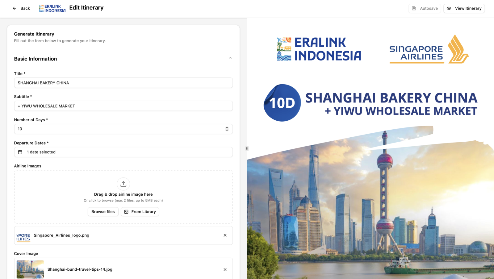

Itinerary Generator
Internal tool for Eralink Indonesia's operations team to draft, manage, and export customer-ready travel itineraries.
The Client
Eralink Indonesia is an Indonesian tour agency that creates and sells travel packages for customers. Their operations team needed an internal tool to replace manual drafting and streamline how itineraries are prepared and shared.
What It Does
Staff fill out a structured form to build a travel itinerary, with a live preview rendering the final customer-facing layout in real time. Completed drafts can be exported as PDFs. Itineraries are shared across the team and organised within a shared library, with managers able to view and edit all drafts made by their staff.
Features
- Form-based itinerary editor with live PDF preview
- PDF export for customer-facing documents
- Airline logo and cover image uploads
- Shared draft library across the team
- Role-based access — managers can view and edit all drafts
Tech Stack
- React 19, TypeScript, Vite
- Tailwind CSS v4, shadcn/ui
- @react-pdf/renderer (PDF generation)
- Express.js, MySQL (VPS-hosted)
Access
Internal tool accessible to Eralink Indonesia employees only. Not publicly available.
